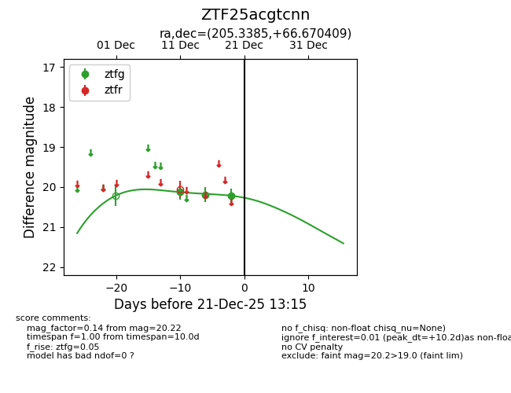
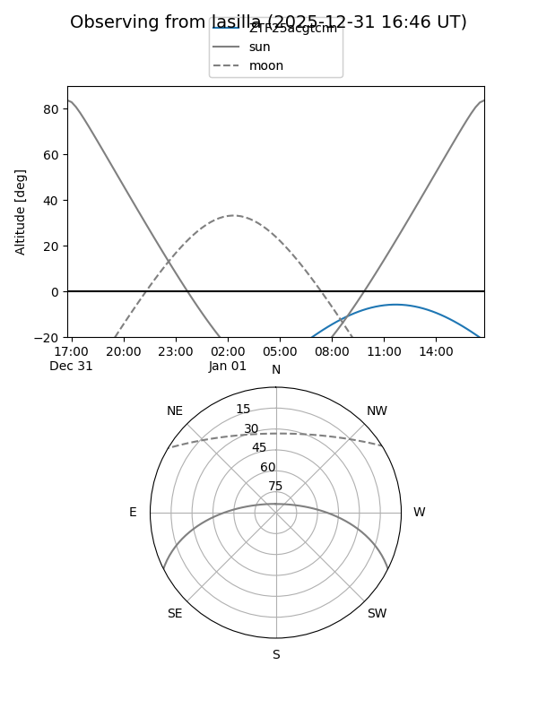
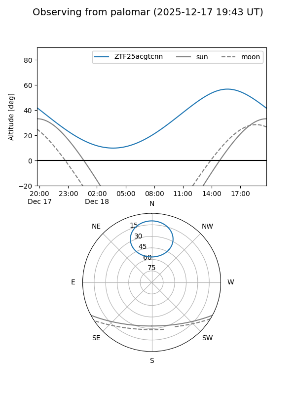
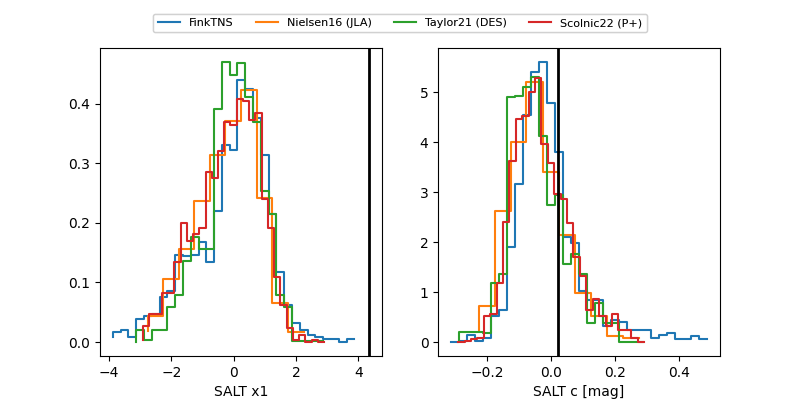

ZTF25acgtcnn
Target ZTF25acgtcnn at 2025-12-31 18:00
Aliases and brokers:
FINK: link
Lasair: link
ALeRCE: link
alt names
ZTF25acgtcnn (ztf,fink_ztf)
Coordinates:
equatorial (ra, dec) = 205.3385,+66.67041
equatorial (HMS+DMS) = 13:41:21.23,+66:40:13.47
galactic (l, b) = (115.3270,+49.71431)
Flags:
Photometry:
last ztfg=20.22
3 ztfg detections
Lightcurve

Visibility


Additional plots
